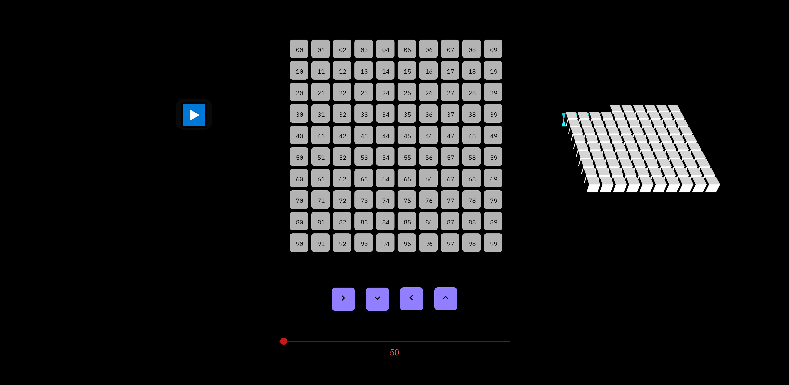
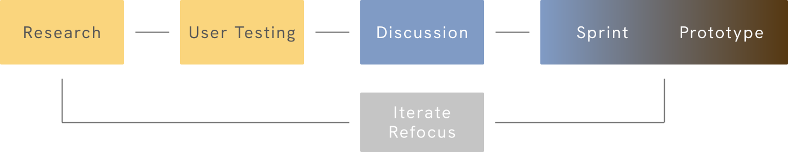

Bulbul is a procedural music application that generates expressive pieces of music using interactive
markov chains.
The project's most recent iteration is deployed on the web using javascript & various libraries
(Tone.js, Three.js, etc).
The application is essentially an instrument that plays an instrument, the musician controls the
meta-instrument which in turn plays different kinds of melodies on the synths built into the code.
MY ROLE
Creative Director, User Researcher, Co-Developer
TEAM
1 Designer/Developers, 1 Developer
ACCOLADES
Won Best Design Hack at PrincetonHack

INSPIRATION
This project was conceived after observing the paradigm shifts in music creation and consumption.
The consumption process has become more passive, widespread and automatised through recommendation
algorithms in music streaming applications. This project aims to democratise & automate the music
creation process in a similar way.
Desire to make music 😀
+
Negative Amounts of Musical Talent 😓
=
Make the Computer make Music 😀
GUIDING CONCEPTS
Two major concepts shaped the development of Bulbul: Meta-Instruments & Procedural
Music.
A Meta-instrument is a network of ideas and concerns that are ‘played’ in the creative process to make the aesthetics and philosophies of a given project.
Procedural Music is merely composition expressed as a set of principles and procedures. This kind of music composition is exemplified by artists like Steve Reich & Brian Eno. It's a philosophy for creating art.
A Meta-instrument is a network of ideas and concerns that are ‘played’ in the creative process to make the aesthetics and philosophies of a given project.
Procedural Music is merely composition expressed as a set of principles and procedures. This kind of music composition is exemplified by artists like Steve Reich & Brian Eno. It's a philosophy for creating art.
PROCEDURAL GENERATION
The Technique/Procedure we used for generating music is called "Interactive Markov Chains". A Markov
chain is a mathematical system that experiences transitions from one state to another according to
certain probabilistic rules. An interactive Markov Chain basically allows you to change those
probabilistic rules through an interface.
DESIGN PROCESS
To create this project I collaborated with Abhishek Cherath a physics student at Stony Brook
University. We executed this project by setting goals and conducting three 36 hour development
sprints over a semester with user testing between them to properly orient the development process.

P01: PAPER PROTOTYPE
Prototype one was a paper prototype. Testing was done on two different ideas: a digital cave for
secular meditation and the procedural music generation interface.
Procedural music generation is more within scope. With an interesting interface, the project will be interesting.
Procedural music generation is more within scope. With an interesting interface, the project will be interesting.
P02: DIGITAL PROTOTYPE
Prototype two was my first digital prototype. It was a quick program made with Java in the
Processing library. The objective was to compare and contrast the paper prototype with the new
digital interface.
More playful interface & seek collaborators for execution.
More playful interface & seek collaborators for execution.
P03: EXPLORING THE FIELD
This round of prototyping was more informal. I wanted to test out existing music projects and see
what parts resonated with people the most.
Find the sweetspot between avant-gard & familiar in user interface design. Give simplified explainaition of back-end
Find the sweetspot between avant-gard & familiar in user interface design. Give simplified explainaition of back-end
P04: EXECUTION
After testing previous prototypes, I started experimenting with the viability of different
generation methods. The main method I explored were Markov chains to generate sequences of chords,
and binary transition matrices.
Validating the effectiveness of Markov chains.
Check out the python files.
Validating the effectiveness of Markov chains.
Check out the python files.
P05: MVP
This is a full implementation of the generation procedure with a functional UI along with curated
samples.
Check out the project.
Check out the project.